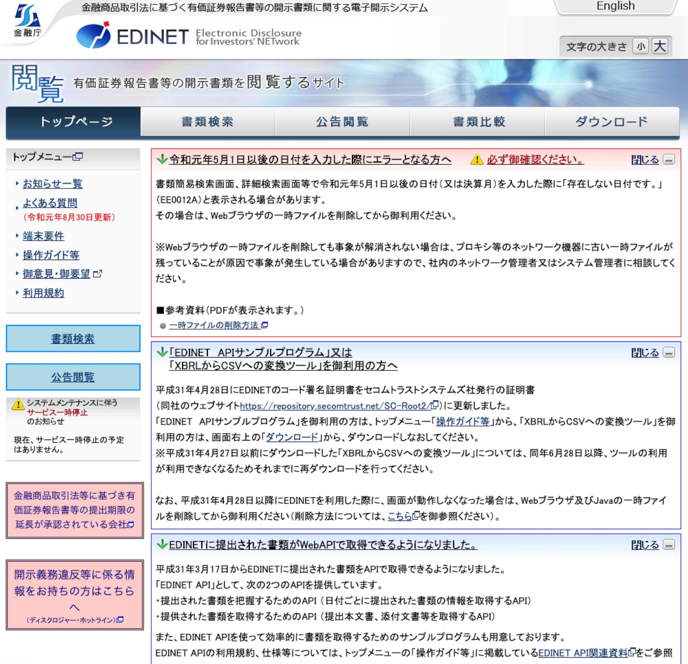
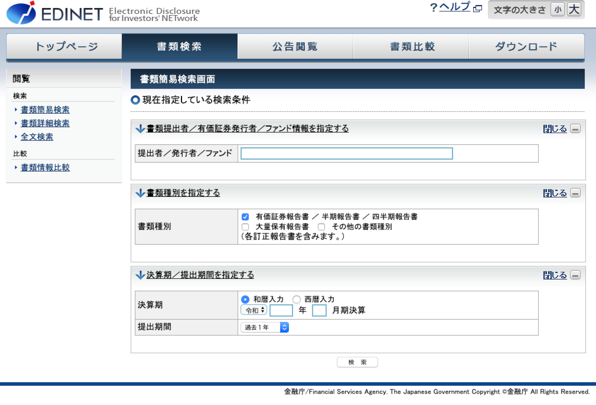
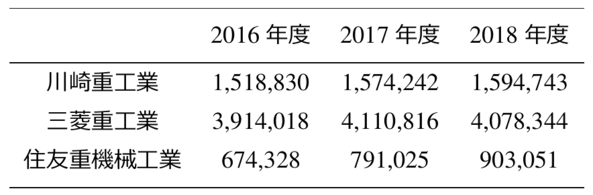
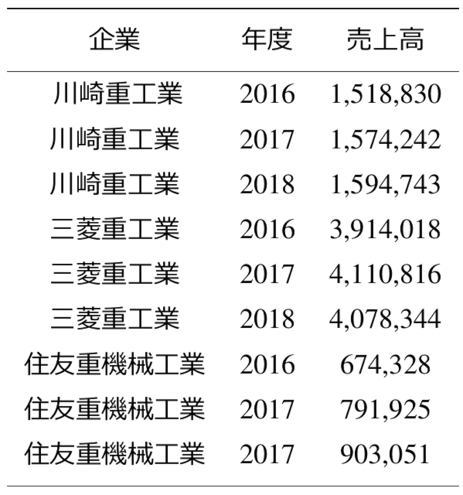
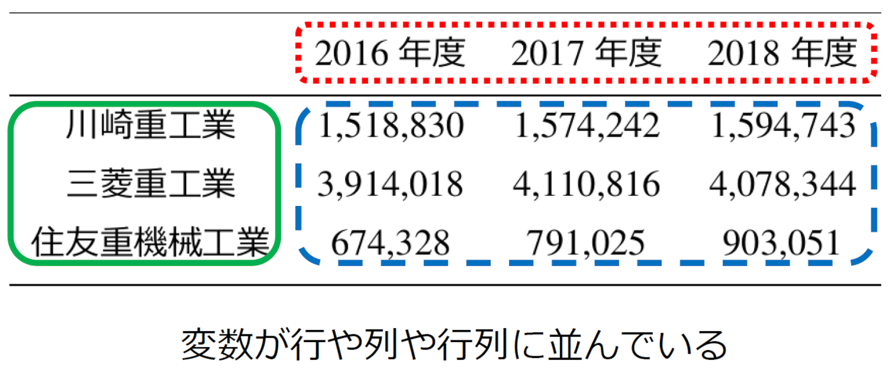
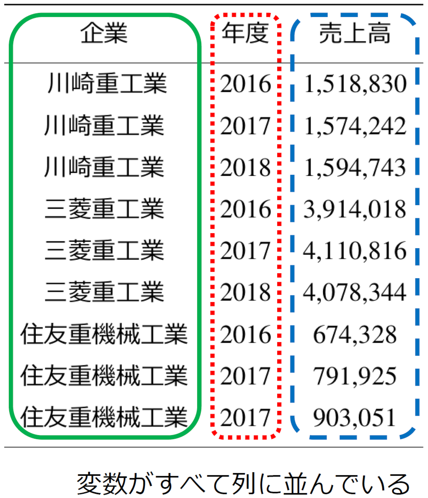
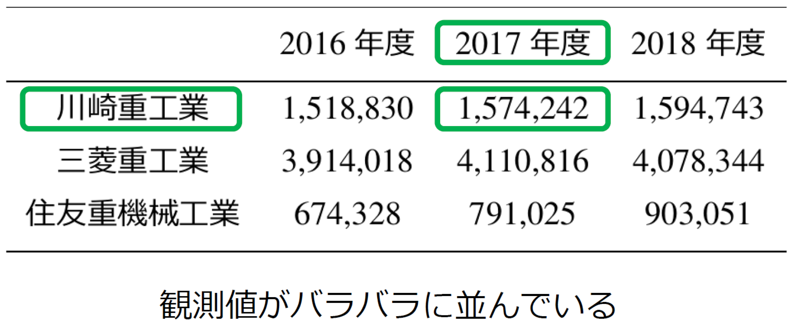
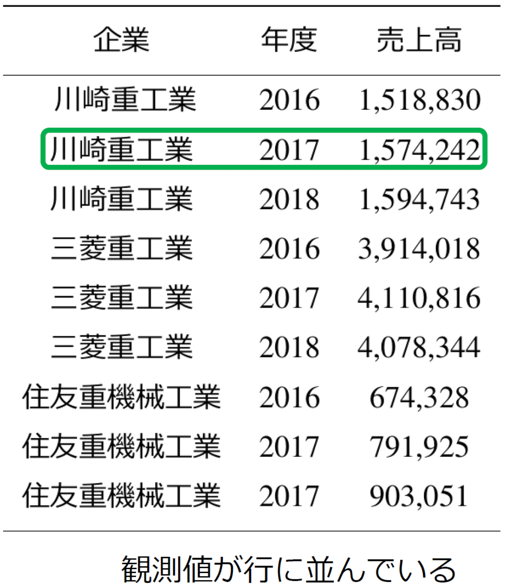
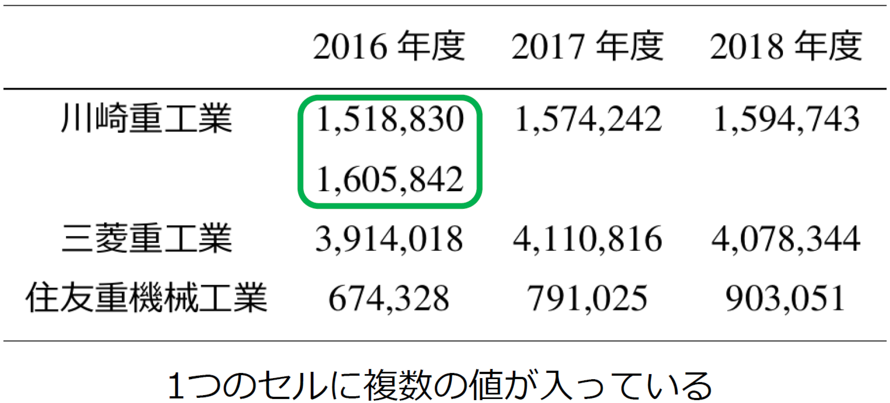
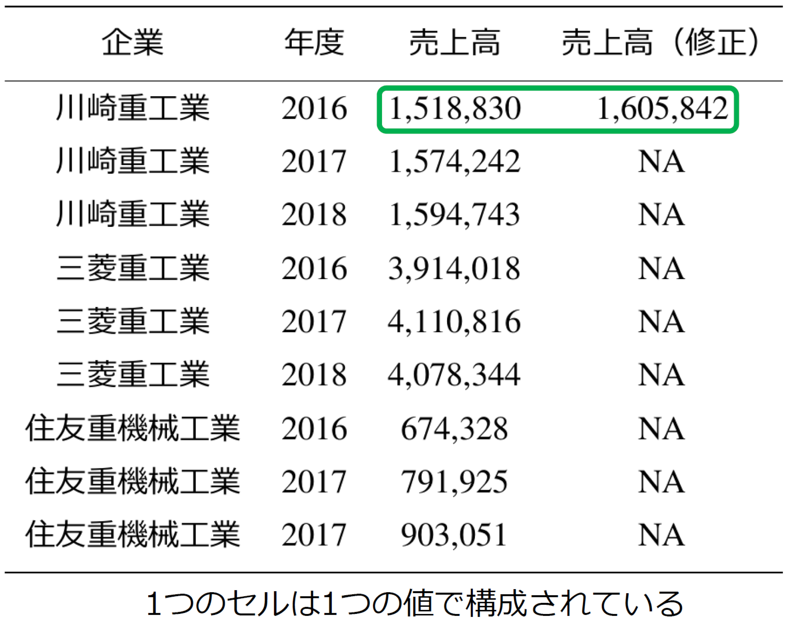

Chapter 2 会計データへのアクセス
<学習目標>
・会計データを入手できる
・整然データを構築できる【応用例】
- なし
【関連する会計研究】
- Wickham, H. (2014) “Tidy Data,” Journal of Statistical Software Vol. 59, No. 10, pp. 1–23.
2.1 会計データを入手し，整理する
会計データを分析するには，何よりもまず会計データを入手する必要がある。 総資産や売上高，あるいは純利益のデータが手元にないと，分析をはじめることすらできない。
学術的研究では，「NEEDS-FinancialQUEST」や「eol」のようなデータベースから，会計データを入手して分析が行われている。 しかし，これらのデータベースは有料である。大学でこれらのデータベースが利用可能でなければ，卒業論文などで利用することは難しい。
もっと手軽にデータを入手する方法はないだろうか。 そこで，本章では，「EDINET」から会計データを無料で，しかもインターネットから簡単に入手する方法について紹介する5。
さらに，入手した会計データは，Rに読み込まれ，分析が実施されることになる。 ここで注意をしなければならないのが，収集されたデータがRで読み取りやすい形式になっているかということである。 もし，Rで操作しにくい形式であるならば，効率的な分析が不可能となってしまう。では，どのようなデータの形式が望ましいのだろうか。
したがって，本章では，「整然データ」についても学習することにする。 整然データは，Rなどの統計ソフトで操作のしやすいデータ構造である。整然データは効率的な分析を可能としてくれる。
2.2 EDINETの使い方
まず，各企業の会計データを入手してみよう。 会計データを用いた分析では，各企業が開示する有価証券報告書に記載されている財務数値を用いる。 そのため，会計データの取得には，有価証券報告書を1社ずつ入手し，そこから必要なデータを手作業で収集する事になる。 有価証券報告書は各企業のウェブページの「IR情報」から入手できることが多い。
ただし，複数企業のデータが欲しい場合には，企業のページに1社ずつアクセスして，1社ずつ有価証券報告書を収集する必要がある。 企業のウェブページは，企業ごとに体裁が異なっているため，有価証券報告書を各社ごとに探すという手間がかかってしまう。
もっと手軽に有価証券報告書を入手できる方法はないのだろうか。 そこで利用されるのが，「EDINET」である6。
EDINETを利用すれば，企業名を検索するだけで，有価証券報告書を閲覧することができる。 EDINETでも1社ずつ検索する必要はある。しかし，有価証券報告書をいちいち探さなくていい点，収集作業が断然楽になるだろう。
まず，検索サイトで「EDINET」と検索するか，「http://disclosure.edinet-fsa.go.jp/」にアクセスする。すると，図2.1のようなウェブページが表示される。

Figure 2.1: EDINETのトップページ
今回は「川崎重工業」に興味を持ったとし，川崎重工業の有価証券報告書を入手してみよう。まず，「書類検索」をクリックする。 すると，図2.2のページが表示される。

Figure 2.2: 検索画面
次に，このページの「書類提出者／有価証券発行者／ファンド情報を指定する」の欄の「提出社／発行者／ファンド」に「川崎重工業」と入力する。 また，会計データ分析では，基本的に複数年の有価証券報告書が必要である。そのために，「決算期／提出期間を指定する」の欄を展開し，そこの「提出期間」を「過去1年」から「全期間」に指定する必要がある。これで，EDINETに収録されている最大期間の有価証券報告書が検索できる。
「検索」のボタンを押すと，図2.3の検索結果が表示される。 「有価証券報告書」の行の「PDF」のアイコンをクリックすると，当該年度の有価証券報告書がPDFファイルの形式でダウンロードできる。 こうして，ダウンロードされた有価証券報告書を閲覧し，必要な財務数値を収集することになる7。

Figure 2.3: 検索結果
2.3 整然データとは
有価証券報告書から取得した財務数値は，一定のデータの形式に並べることになる。 データの形式はさまざま考えられる。 ここでポイントとなるのが，ここで構築されたデータはRで用いられるということだ。 すなわち，Rで扱いやすい形式のデータを構築する必要が出てくる。
では，データはどう並べるのがRでの分析に利用しやすいのだろうか。 ここで登場するのが，「整然データ」である。 整然データとは， Wickham (2014) で提唱されたデータ構造のことである。 Rなどの統計ソフトで分析するためには，整然データのルールにしたがってデータを並べることが重要となる。
Wickham (2014) によると，整然データを構築するためには，以下の3つの規則を満たす必要がある8。
- それぞれの変数は，自身の列を有していないといけない。
- それぞれの観測は，自身の行を有していないといけない。
- それぞれの値は，自身のセルを有していないといけない。
では，具体的に，整然データの構造をみていこう。 ここでは，川崎重工業，三菱重工業，および住友重機械工業の売上高を2016年度から2018年度までの3年ずつ，合計で9企業年分入手したとする9。
その際，図2.4にデータをまとめたとしよう。 このような表はよくみるはずだ。 ここでは，行に企業名を並べ，列に年度を並べて，それぞれの行列に対応するセルに売上高が配置されている10。 この表は，企業と年度の対応があるため，我々人間にとっては確認がしやすい。

Figure 2.4: 雑然データの例
しかし，図2.4の形式は，上記の規則3以外守られていないため，整然データとはいえない。 このような整然データでない構造のデータは「雑然データ（messy data）」とよばれる。 雑然データは統計ソフトでは扱いにくい形式であり，分析に使用するのは好ましくない。
図2.4を整然データに並べ替えると，図2.5のようになる。なぜ，統計ソフトで扱う場合に雑然データではダメなのだろうか。規則を1つずつ確認することでみていこう11。

Figure 2.5: 整然データの例
まず，規則1の「それぞれの変数は，自身の列を有していないといけない」である。 変数とは，「企業名」「年度」「売上高」のようなデータを指す。 雑然データを見てみよう。ここで，これら変数は，図2.6のように企業名が列，年度が行，売上高にいたっては行列に並んでいる。 変数がバラバラに並んでいると，統計ソフトで変数を指定するとき，変数ごとに指定の方法がバラバラになり，コードを書くのがとても大変になる。

Figure 2.6: 規則1の例：雑然データ
そこで，整然データの規則1が有効になる。図2.7のように，変数は列に並べる。 こうすることで，ソフト上では，列だけを指定することで変数を取り出すことができる。コードを書くのが楽になるのだ。

Figure 2.7: 規則1の例：整然データ
次に，規則2「それぞれの観測は，自身の行を有していないといけない」である。 観測は「川崎重工業の2018年度」のようにある観測された対象を示す。 ここで，川崎重工業の2018年度の売上高を確認してみよう。図2.8のように，行と列がそれぞれバラバラに位置されていることがわかる。

Figure 2.8: 規則2の例：雑然データ
統計ソフトに同じことをさせると，1つの観測を抜き出すのに，3箇所の行列の指定をしなければならない。 これは大変なので，図2.9のように，1つの観測値は1行に並ぶようにする。 これで，ソフト上で行だけを指定すれば，観測値を取り出すことができる。

Figure 2.9: 規則2の例：整然データ
最後に，規則3「それぞれの値は，独自のセルを有していないといけない」である。 値は「川崎重工業」や「3,914,018」のように観測された企業名や売上高などの内容そのものを指す。 ここで，川崎重工業の2016年の売上高が修正されたとしよう。 これを反映したのが図2.10であり，下の数値が修正された売上高である。 図2.10では，1つのセルに売上高が2つ入っている。 このように1つのセルにデータが2つ入っていると，セルを指定した際，売上高が2つ取り出されてしまう。 なので，セルには1つの値しか入れてはいけない。

Figure 2.10: 規則3の例：雑然データ
この例を整然データに直すなら，図2.11のように新たに「売上高（修正）」の変数を作り，修正された売上高はそこの列に配置することになる。売上高の修正のない観測は，「売上高（修正）」を「NA」として欠損値で扱っておけば問題ない12。

Figure 2.11: 規則3の例：整然データ
以上のように整然データとして構築されたデータは，Rなどの統計ソフトで容易に扱うことができる。 ある1列を指定すればその列の変数が取り出せるし，ある1行を指定すればその行の観測が取り出せる。 また，セルは1つの値しか入ってないので，そのセルを指定するだけで欲しい値を取り出すことができる。 このように，整然データに従ってデータを構築すれば，データ分析を効率的に行うことができるようになる。
財務情報はバフェット・コードといったサイトでも入手可能である。企業の財務情報を収集するのは手間がかかるが，このサイトを利用することで，簡便に企業の財務情報にアクセスできる。↩︎
金融庁が提供する有価証券報告書等の企業が開示する書類を閲覧できるウェブサイト。過去5年分 の開示書類が収録されている。EDINETは，Electronic Disclosure for Investors’ NETworkの略称。↩︎
EDINETを利用してデータを自動取得することもできる。ただし，そのためにはウェブ・クローリングに関する知識が必要となる。↩︎
“12 Tidy data,” R for Data Science,https://r4ds.had.co.nz/tidy-data.html, 2021年3月10日閲覧。なお，Wickham (2014) では，下記の規則3はなく，代わりに「それぞれの種類の観測単位は，ある表を構成する」がある。これは，会計データの分析に必要な財務情報は，バラバラの表にではなく，1つの表に集めなければならない，と解釈できる。↩︎
「企業年」はある1企業のある1年度の観測値を示す単位である。 「川崎重工業の2018年度」という観測値に対して「1企業年」という数え方をする。 ここでの例の場合，3企業の3年度ずつの会計データが取得されており，3企業 \(\times\) 3年度 \(=\) 9つの観測値が存在する。 そのため，9企業年となる。↩︎
「行」は表の横の並び，「列」は表の縦の並びを示す。行列の覚え方についてはこのウェブページが詳しい。「行列で縦か横か迷ったら」Colorless Green Ideas, https://id.fnshr.info/2015/10/17/matrix/, 2021年3月10日閲覧↩︎
以下の解説は，このウェブページを参考に作成されている。「整然データとは何か」Colorless Green Ideas, http://id.fnshr.info/2017/01/09/tidy-data-intro/, 2021年3月10日閲覧。↩︎
値が欠損しているときに使われる記号。Rでは，「NA」とセルに記載されていれば，当該値は「欠損値」として扱われる。ちなみに，NAは，not applicable，あるいはnot availableの略称。↩︎